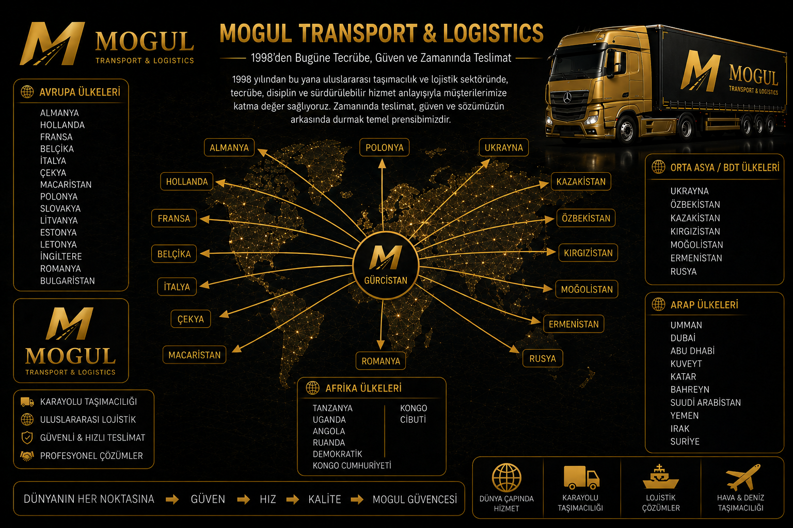

Güvenilirlik
Müşterilerimizle uzun vadeli ilişkiler kurmayı ve verilen sözlerin arkasında durmayı hedefliyoruz.

1998'den Bugüne
1998 yılından bu yana uluslararası taşımacılık ve lojistik sektöründe; güvenilir, disiplinli ve sürdürülebilir çözümler üreterek iş ortaklarımıza değer katıyoruz.
Sınır geçişleri, transit güzergâhlar ve gümrük süreçlerinde saha deneyimi.
25+ Yıllık Tecrübe
7+
Ülkede Operasyon
Deneyimi
50.000+ Başarılı Taşımacılık
100+ Uzman Ekip
%100
Güven ve Zamanında
Teslimat
MOGUL TRANSPORT & LOGISTICS
1998 yılından bu yana uluslararası taşımacılık ve lojistik sektöründe edindiğimiz tecrübeyle; müşterilerimize güvenilir, disiplinli ve sürdürülebilir lojistik çözümleri sunuyoruz.
Bizim için lojistik; verilen sözün yerine getirilmesi, zamanında teslimat ve müşterinin güveninin korunmasıdır. Her taşımanın kendine özgü koşullarını ve risklerini önceden değerlendirerek hareket ediyoruz.
Ukrayna, Özbekistan, Moldova, Kazakistan, Kırgızistan, Moğolistan ve Rusya'nın farklı bölgelerinde edindiğimiz operasyonel tecrübe; bölgesel yollar, sınır geçişleri, gümrük süreçleri ve yerel çalışma koşulları konusunda güçlü bir bilgi birikimi oluşturmuştur.
Çin sınırları ve Çin gümrük süreçlerindeki saha deneyimimiz ise Uzak Doğu ile Avrupa ve Orta Asya arasındaki taşımalarda önemli bir operasyonel avantaj sağlamaktadır.
Avrupa'nın farklı ülkelerine ve bölgelerine uzanan uluslararası taşıma operasyonlarında; güzergâh planlaması, sınır geçişleri ve operasyonel süreçlerin koordinasyonunu tecrübemiz doğrultusunda yönetiyoruz.
Lojistikte fiyat önemlidir. Ancak bizim için güven daha önemlidir. Verdiğimiz sözü yerine getirmek, her operasyonun temel sorumluluğudur.
Müşterilerimizle uzun vadeli ilişkiler kurmayı ve verilen sözlerin arkasında durmayı hedefliyoruz.
Lojistikte zamanın doğrudan maliyet ve güven anlamına geldiğinin bilincindeyiz.
Her taşımanın planlamadan teslimata kadar kontrollü ve düzenli şekilde yürütülmesine önem veriyoruz.
1998'den bugüne farklı ülkelerde, sınır kapılarında ve uluslararası güzergâhlarda edinilen saha deneyimini operasyonlarımıza yansıtıyoruz.
Uluslararası taşımacılıkta farklı ülkelerin gümrük prosedürleri, sınır geçişleri, transit güzergâhları ve operasyonel koşulları taşımanın zamanlamasını doğrudan etkileyebilir.
MOGUL Transport & Logistics olarak, taşımanın yalnızca yola çıkmasından değil; sınırdan geçişinden teslimata kadar olan bütün sürecinden sorumlu bir anlayışla hareket ediyoruz.
MOGUL TRANSPORT & LOGISTICS
Hedefimiz yalnızca yükünüzü taşımak değil, lojistik sürecinizde güvenebileceğiniz bir çözüm ortağı olmaktır.